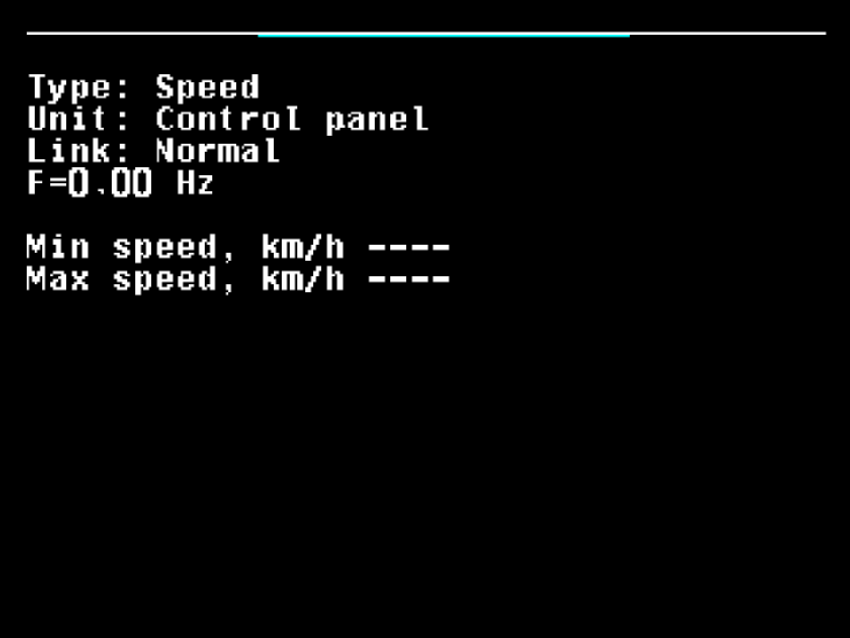

The sensor status screen
How to read the status screen of a Hectare Mini sensor — type, unit, link, live figures and active alarms — and what each kind of sensor shows on it.
“Information” in the context menu of a sensor opens its status screen (Sensor settings). It shows what the panel knows about this one sensor right now — the first place to look when an alarm is not clear.

- Channel selector — which sensor of the whole list this is. “MINUS” shows the previous sensor, “PLUS” the next; the screen stays open.
- “Type:” — the kind of sensor and its number.
- “Unit:” — where the sensor is connected, here “Control panel”. Sensors on the sensor network have no such line.
- “Link:” — the state of the communication. Table below.
- The live figure of this kind of sensor — here the pulse frequency F= of the speed sensor, in Hz.
- “Min speed, km/h” in force. ---- means switched off.
- “Max speed, km/h” in force.
At the “Service” level a line with the address of the sensor in the sensor network is added at the top. When the sensor has active alarms, two red lines appear at the bottom: “Alarm 1 from 2” and the name of the alarm shown.
| Button | Action |
|---|---|
| “PLUS” / “MINUS” | Next / previous sensor. |
| “UP” / “DOWN” | Next / previous active alarm of this sensor. |
| “MENU” | The context menu of this sensor, with “Disable control” or “Enable control” as first item. At “Operator”, while the machine moves, “MENU” does nothing on the speed sensor. |
| “BACK” | Back to the screen you came from. |
Link states
| State | Meaning |
|---|---|
| “Normal” | The sensor answers. |
| “Not controlled” | The sensor is out of control: neither its communication nor anything else is watched. |
| “No connection” | The sensor does not answer. Red. |
| “Wrong device type!” | Something answers, but not the kind of device the profile expects. Red. |
| “IMITATION” | Speed sensor only: the speed is simulated, not measured. Yellow. |
The live figures and the alarms are shown only while the sensor is under control, answers, and is of the right kind.
What each kind of sensor shows
| Sensor | Live figures |
|---|---|
| Speed sensor | F= in Hz; with two sensors F1= and F2=. Then “Min speed, km/h” and “Max speed, km/h”. With motors that dose by weight, the limits are those the motors can hold, narrowed by the two settings; a limit the settings cannot meet is written in red. |
| Seed and fertilizer sensors | Status: and the state of the sensor — below. |
| Dispenser sensor | F= in Hz, to three decimals. |
| Fan sensor | F= in Hz. |
| Pressure sensor | P= in kPa. |
| Hopper sensor | Pin: with the level on the input, "0" or "1". |
| Work position sensor | “Position: Working” or “Position: Transporting”, and Pin: with the level on the input. |
| Ignition, oil pressure, battery charge, fuel level, air filter | Pin: with the level on the input. |
| Liquid fertilizer flow sensor | Status: “Working”, or Working:Tramline in a tramline bout; Flow= in L/min. |
| Dispenser motor | Status: “Working” or “Faulty”; after a fault Last fault: with the code of the controller. |
States of a seed or fertilizer sensor
| Status | Meaning |
|---|---|
| “Working” | Normal. Working:Tramline — normal, in the tramline mode of this bout. |
| “Configuring” | The sensor has received new settings from the panel and is applying them. |
| “Calibration in progress” | The sensor runs its initial calibration; it takes a few seconds. |
| “Clogged” | Something blocks the optical channel — the coulter or seed tube may be blocked. Red. |
| “Light struck” | Too much sunlight falls on the sensor; it cannot count. Red. |
| “Faulty” | The sensor has failed and must be replaced. Red. |
| “Unknown” | Another fault that cannot be identified. Red. |
Something your machine does that this page does not answer? Write to support@agriwelt.com — an engineer answers.